Awareness leaves a gap
Knowing millets exist does not tell someone how they taste, where to find them, or how to cook them.
MILLETWISE / PRODUCT & UX DESIGN
A mobile concept that helps urban young adults understand millets, choose a familiar recipe, and try their first meal swap.
Interactive Figma prototype · opens in a new tab
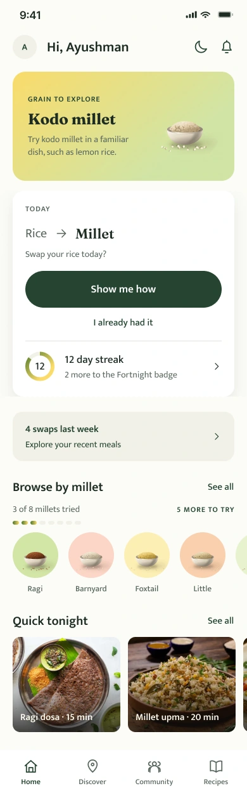
THE PROJECT IN A MINUTE
MilletWise connects the question “What is this grain?” to “What can I cook tonight?”
Research with young adults pointed to uncertainty about preparation, taste, and access. I explored a service that supports the journey from a store encounter to a meal at home.
Knowing millets exist does not tell someone how they taste, where to find them, or how to cook them.
Grain guidance, familiar recipes, step-by-step cooking, and local discovery in one connected experience.
Fieldwork, synthesis, service mapping, information architecture, visual design, and a Figma prototype.
6 interviews31 survey responsesSolo academic concept
Explore the working prototypeDesign concept. No live launch or measured adoption results.
01 / THE STARTING POINT
Visiting grain markets in Lucknow with my father stayed with me.
That childhood memory became a starting point for investigating how people choose grains today. I looked beyond the packet: at shops, restaurants, cooking habits, and the people who influence what ends up on a plate.
02 / THE DISCOVERY
Taste, availability, and preparation shaped whether millets felt worth trying.
The primary-research synthesis ranked taste ahead of availability, health, and cost. A health message alone would leave an important question unanswered.
Participants needed help knowing how to use alternative grains. The experience needed to make a meal feel doable.
The research identified uncertainty about grain knowledge and benefits. Information needed to connect to a real purchase or cooking decision.
The original project documents six in-person interviews, 31 survey responses, and three user segments, alongside contextual inquiry and secondary research. These findings are directional, from a small exploratory sample. They do not establish population-wide preferences or prove that the proposed experience changes behavior.
THE RESEARCH, IN DEPTH
I moved between the wider food system and individual food decisions.
Desk research established the context. Field observations and semi-structured interviews brought in lived experience. The survey explored knowledge, attitudes, and behavior among urban young adults.
Explore dietary diversity and alternative grains.
Visit markets and food businesses.
Use interviews and an exploratory survey.
Connect knowledge, taste, access, and trust.
Explore ideas, prioritize, and map the service.
SECONDARY RESEARCH & SYSTEM MAPPING
I reviewed dietary-diversity literature, millet-consumption research, and policy material. Mapping the system helped place the consumer within production, distribution, retail, and food culture.
Contribution to the brief: a wider view of access and trust, beyond awareness alone.
01 / MILLET ECOSYSTEM
Supply, everyday demand, and public support formed three connected parts of my desk-research map.
THE POLICY CONTEXT
Milestones captured in the original research, based on NITI Aayog’s 2023 report.
Initiative for Nutritional Security through Intensive Millet Promotion.
Coarse grains included in the National Food Security Act.
National Nutrition Strategy recommendations connected millet cultivation and dietary diversity.
Millets recognized as nutri-cereals, with national promotion and support under the food-security mission.
The UN declared 2023 the International Year of Millets; procurement and distribution guidance also evolved.
Adapted from my original ecosystem board. This records the project’s historical research context, rather than a current policy review.
02 / ALTERNATIVE-GRAIN SYSTEM MAP
The original map followed alternative grains across production, processing, distribution, and consumption. These groups retain its breadth while making the relationships easier to read.
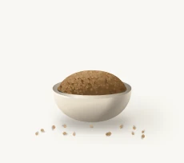
From the conditions of growing to the confidence to cook.
Connect grain knowledge, local access, and preparation—so an unfamiliar ingredient has a practical route into a familiar meal.
Regrouped from the original system map; the complete source remains available below.
Food preferences, familiarity, recipes, and routines
Availability, product information, and meals to try
Production, supply, and the context of access
The project bibliography includes FAO dietary-diversity guidance, NITI Aayog’s Promoting Millets in Diets (2023), and Kane-Potaka and colleagues’ Assessing Millets and Sorghum Consumption Behavior in Urban India (2021). These are secondary sources, separate from my six interviews and 31 survey responses. Dietary-diversity scoring appears in the desk research; the project does not document a completed HDDS assessment.
CONTEXTUAL INQUIRY & SEMI-STRUCTURED INTERVIEWS
Visits to markets, retailers, and restaurants helped me examine how people encounter millets. Observation and semi-structured conversations explored knowledge, preferences, and barriers among consumers and people in the food system.
Contribution to the brief: preparation guidance and habit formation emerged as important parts of the experience.
FROM THE FIELD NOTES
One consumer had begun eating millets but knew few dishes and had no family tradition of cooking them.
Another was experimenting with millet habits, while still preferring the taste of rice.
Food businesses described taste as an attraction for younger visitors, alongside health motivations among older customers.
Paraphrased from the contextual-inquiry notes; individual observations from a small exploratory sample.
EXPLORATORY SURVEY & DIGITAL LANDSCAPE REVIEW
The survey explored how familiar young adults felt with millets and what shaped their food choices. Alongside it, a review of digital offerings looked at the support already available.
Contribution to the brief: connect information to preparation and access, rather than stopping at product discovery.
rated their grain knowledge between 1 and 3 on a five-point confidence scale.
selected adaptation as a barrier to incorporating millet or healthy foods.
selected guidance as a barrier. Finding millets and taste each also received 13 selections.
Counts transcribed from the original survey charts. The barriers question allowed multiple selections. Other questions on the board have different response totals.
“It should be made healthier without any drastic change in taste.”Anonymous survey response, original project board
Exploratory survey, 31 responses. Multiple selections allowed. Counts transcribed from the original board.
INSIGHT CLUSTERING, PERSONA & HOW-MIGHT-WE FRAMING
I grouped the findings around perceptions, patterns, and trust. The persona and opportunity questions translated that broad picture into needs the service could address.
Contribution to the brief: make unfamiliar grains easier to understand, find, and prepare in an everyday meal.
Knowledge and awareness
Taste and expectations
Location and culture
Adaptability and access
The producer–consumer gap
Community and guidance
An editorial grouping of the themes recorded in the original synthesis board.
RESEARCH SYNTHESIS / WORKING PERSONA
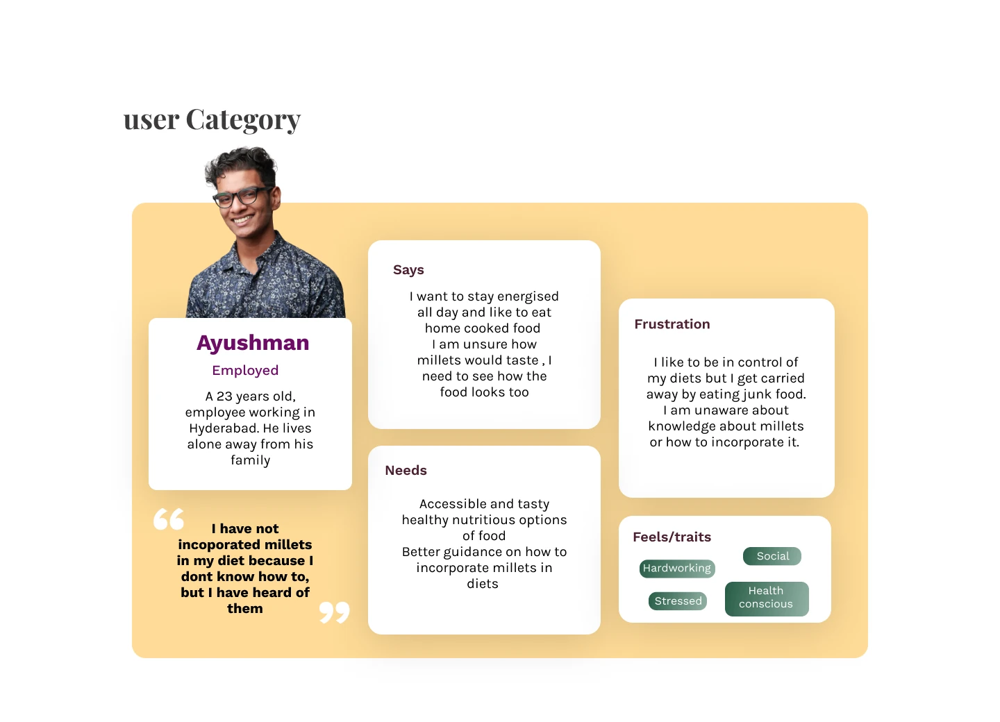
A design persona synthesized from the research.
He prefers home-cooked food and wants to stay energized. Millets are familiar by name, but their taste and preparation still feel uncertain.
WHAT HE NEEDS
Accessible, appealing food options and practical guidance on adding millets to his meals.
WHAT GETS IN THE WAY
Limited grain knowledge and the ease of falling back on familiar food choices.
Show an appetizing, familiar dish—and make the first attempt easy to follow.
01How might millets fit into a familiar everyday meal?
02How might information build confidence at the moment of choice?
03How might preparation and community support make the first attempt easier?
Condensed from the original how-might-we exploration.
CRAZY 8s & IMPACT–EFFORT PRIORITIZATION
Early ideas included games, recipe books, packaging, food spaces, and community services. Crazy 8s supported divergent exploration. An impact–effort matrix helped compare possibilities and select a direction.
Contribution to the brief: a mobile portal with an in-store entry point, connecting awareness to preparation and shared knowledge. Impact and effort were design judgments, not measured outcomes.
IDEATION / CRAZY 8s
I used Crazy 8s to explore ways to make millets easier to discover and use—from games and recipe books to packaging, food spaces, and a connected digital service.
A game for learning about millets
Branding for millet startups
A mobile knowledge-to-table platform
A video and photography platform
A recipe book
An agro-tourism service
A millet community
A healthy-food court
Packaging design
A sensory device for millet dishes
A smartwatch extension
An interactive installation
Products for processing millets
A farmer-to-consumer platform
PRIORITIZATION / IMPACT & EFFORT
I compared the ideas by their potential value and the effort needed to deliver them. The matrix helped focus the concept on knowledge, access, and connections between people.
THE DESIGN QUESTION
A tighter framing of the original brief: help urban young adults understand and incorporate alternative grains into everyday eating.
03 / DESIGN DECISIONS
EVIDENCE
Taste and preparation surfaced as barriers.
DESIGN RESPONSE
The current concept leads with a rice-to-millet swap, then connects it to familiar dishes. The next action is choosing a meal.
EVIDENCE
Knowledge and availability both affect adoption.
DESIGN RESPONSE
A grain detail page connects names, preparation, recipes, and places to buy. It gives separate features a shared point of reference.
EVIDENCE
People asked for preparation and usage guidance.
DESIGN RESPONSE
Cooking mode shows one step at a time, with ingredients and a timer. It supports the moment when unfamiliarity can interrupt the meal.
04 / THE SERVICE BLUEPRINT
A shelf encounter, an app visit, and a meal belong to the same service.
The original blueprint separates user actions, visible touchpoints, backstage activities, and support. The later flow maps describe how the app’s screens connect, including routes beyond the ideal path.
PART ONE OF THE SERVICE / IN STORE
A QR label turns a moment at the shelf into a chance to understand the grain.
The original concept uses WebAR to visualize grain information at the point of purchase. Scanning the label opens a browser experience, where the person can explore the grain before deciding whether to continue into the app.
AR was explored as a way to make an abstract comparison feel tangible. Its value over a simpler information page still needs to be tested.
A MilletWise label invites the shopper to learn about the grain.
The scan starts a web-based experience on their phone.
View information in AR, with a camera-free route in the later screen concept.
The proposed handoff offers installation and onboarding for continued cooking support.
THE PHYSICAL DEMONSTRATION
I brought the service into a physical display: grain jars, QR labels, and visual comparisons connected the digital concept to something people could hold and inspect.
THE FIRST DIGITAL TOUCHPOINT
The QR code is the bridge between the physical grain and the web experience. In the later concept, a grain landing page offers both an on-pack view and a simpler route to the numbers.
The QR artwork shown here is the original demo label. The screens below document the concept.
Nutrition figures in the demonstration and concept screens are illustrative project content, not validated dietary guidance.
AR / EARLY EXPLORATION
I explored how a pack could become an entry point for learning about a grain. Paper sketches led to experiments with spatial comparisons and on-pack information.
FROM STORE TO APP / PROPOSED HANDOFF
After exploring the grain, the shopper can choose to install MilletWise and move from understanding the product to planning a meal.
Offer the app from the QR-linked web experience.
The proposed download handoff leads into app onboarding.
Choose food preferences, a meal, and a grain to try.
Service concept: the installation handoff is proposed; the available interactive experience is the Figma prototype.
PART TWO OF THE SERVICE / THE APP
The app carries the experience beyond the shelf—with grain guidance, recipes, cooking support, and people to learn from.
ONBOARDING / A PERSONAL START
Food preferences shape recipe suggestions. Meal setup connects a grain to breakfast, lunch, or dinner at a pace the person chooses.
This creates a concrete next step: choose a meal, find a recipe, and begin cooking.
Explore the cooking journey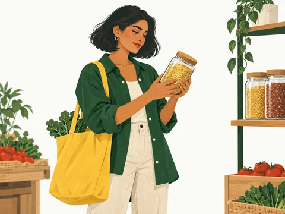
Choose your food preferences to tailor recipe suggestions.
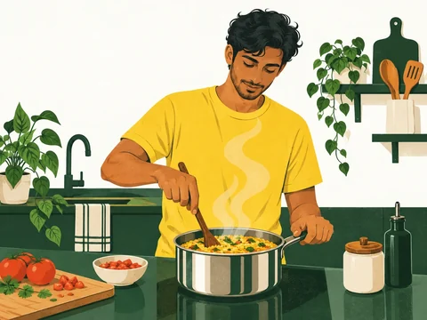
Choose a meal and how often you’d like to try it.
Try it in your next khichdi.
Illustration-led visual concepts for ages 18–35 in India’s tier 1 and tier 2 cities. The linked Figma prototype includes the refined typography, original logo, and updated interface copy.
Names, context, preparation, and recipes belong together.
Move from a meal swap to ingredients and step-by-step cooking.
Explore food places and learn through community questions.
HOW THE APP HOLDS TOGETHER
Encounter a grain at a shop or in the app.
Understand the grain and select a meal.
Follow the recipe and cooking guidance.
Log the swap and decide what to try next.
A simplified view of the current Figma flow. The original detailed maps remain available below.
Suggested swaps and recent activity
Places, products, and events
Questions and shared guidance
Find, save, and prepare a meal
VISUAL DESIGN / MILLETWISE MOBILE APP
Identity, typography, color, components, and language—documented through app examples, measurable specifications, and research rationale.
Recognizable meals, a steady reading order, and useful support at every step.
Open the app guidelines in Figma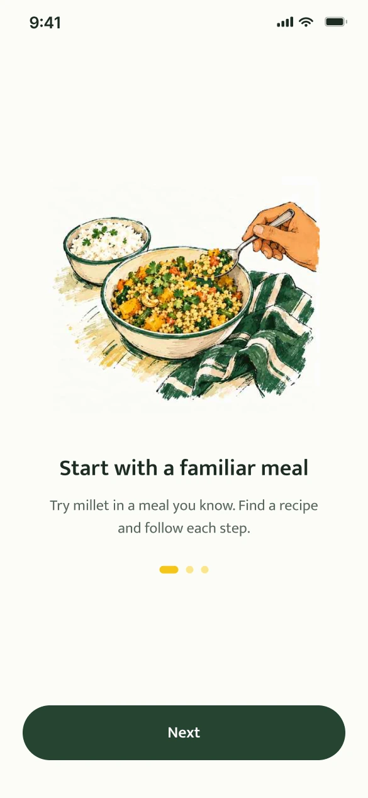
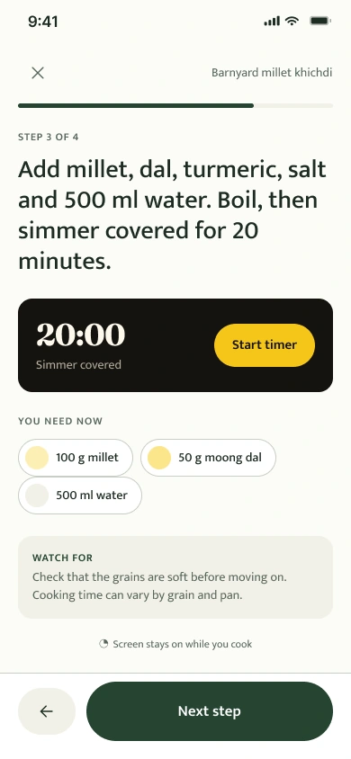
Grain knowledge rated 1–3/5.
Make information easy to scan.
Adaptation/ease was a barrier.
Start with a familiar meal.
Needed incorporation guidance.
Make the next step explicit.
Exploratory study: 6 interviews, 31 survey responses; multiple barrier selections allowed. These findings guide design priorities, not claims of tested impact.
Original grain-and-sun mark. Fixed proportions. One consistent signature.
The original grain-and-sun mark and approved wordmark.
Let X equal the mark’s square frame. Reserve ¼X on every side. Place the logo on paper when the background is dark or busy.
Recommended minimum: 48 px mark frame or 184 px lockup. Check the final export at its displayed size.
Original proportions, colors, and Work Sans Bold wordmark with its existing tracking.
No stretched artwork, new symbols, effects, or decorative outlines.
Use at recognition moments; give task screens room for their content.
| Element | Specification | Application |
|---|---|---|
| Mark master | 64 × 64 frame | Scale the original artwork proportionally. |
| Wordmark | Work Sans Bold · original tracking | Use the supplied lockup; do not retype it. |
| Clear space | ¼X on all sides · X = mark frame | 64 px mark → 16 px minimum clear space. |
| Minimum size | 48 px mark · 184 px lockup | Recommended screen sizes; verify the final export. |
Logo usage values are MilletWise recommendations. Platform app-icon exports require separate specifications.
Mukta for the interface. Fraunces for editorial moments. Work Sans for the logo.
Regular 400 · Medium 500 · Semibold 600
Humanist forms with Latin and Devanagari support. Used for navigation, instructions, forms, and actions.
A familiar meal.
A little possibility.
Expressive headings and selected numerals. Keep long instructions and recovery messages in Mukta.
Work Sans remains exclusive to the original wordmark. Localization still requires layout and language testing.
A familiar meal
Plan your first millet meal
Start with a familiar meal
Which meal?
Save my meal plan
Find a recipe and follow each step.
You can change this later.
| Context | Specification | Use |
|---|---|---|
| Body copy | Mukta Regular · 17 / 26 | Instructions and explanations; left aligned. |
| Actions & emphasis | Mukta Semibold · 17 / 26 | Action labels and short, important phrases. |
| Supporting copy | Mukta Regular · 14 / 20 | Hints and recovery text; never hide the next step here. |
| Scaling & localization | Flexible height · natural wrapping | Retain full labels; test English and Devanagari. |
Sizes are Figma design units at the 390 px baseline. Map to platform text styles and support system font scaling.
Choose colors by their role. Light and dark modes preserve the same hierarchy.
#264532Primary action
#F2D747Accent / emphasis
#FCFCF8Ground surface
#1E2C23Primary text
#59675ESupporting text
The same roles, adapted for a different surface.
The same roles, adapted for a different surface.
Target at least 4.5:1 for normal text. Selection also needs a border, icon, or label. Yellow carries dark text.
| Token / role | Light | Dark |
|---|---|---|
| surface/raised | #FFFFFF | #222F25 |
| surface/sunken | #F1F0E6 | #111A14 |
| text/secondary | #59675E | #BEC8B8 |
| border/default | #C9CEC3 | #596957 |
| border/focus | #264532 | #F2D747 |
| action/primaryText | #FFFFFF | #1E2C23 |
| action/secondary | #F1F0E6 | #222F25 |
| action/chipSelected | #F8EFB7 | #F2D747 |
Values are taken from the app’s semantic variables. Ratios are calculated for solid color pairs; this is not a whole-app accessibility certification.
A 390 px reference canvas, a repeatable spacing scale, and one outline icon family.
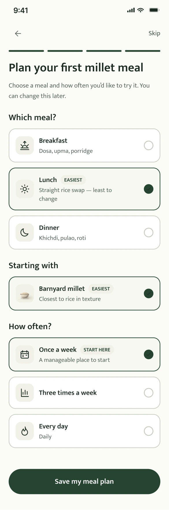
Rounded containers and pill-shaped controls. Tighter gaps group a choice; wider gaps separate decisions.
Place 24 px artwork inside a larger interactive area: 44 pt on iOS, 48 dp on Android.
Pair navigation icons with words. Give standalone controls an accessible name.
| Layer | Specification | Rule |
|---|---|---|
| Screen | 20 px side margins · 350 px content | Keep the content edge consistent; respect safe areas. |
| Grouping | 4–12 px within · 24–32 px between | Recommended rhythm: proximity indicates relationship. |
| Icons | 24 × 24 · 1.75 px rounded stroke | Keep optical weight consistent; label navigation. |
Consistent dimensions, visible states, and feedback tied to the user’s action.
Keep one dominant action in each task area. Explain why an action is unavailable.
A persistent field label and a specific error explain what needs to change.
Confirm the result and offer Undo when the action can be reversed.
Static component specimens. App dimensions: 60 px primary buttons, 44 px search fields, and 12 px navigation labels. Implement platform-specific target sizes.
| Component | Anatomy | Behavior rule |
|---|---|---|
| Primary button | 60 px high · 24 px side padding · pill | One dominant action per task area. |
| Search field | 44 px high · 18 px side padding | Visible focus; maintain a persistent accessible name. |
| Choice chip | 45 px visual height · pill | Expose selection to assistive technology. |
| Bottom navigation | 68 px bar · 12 / 16 labels | Keep labels visible; communicate the active destination. |
Four everyday moments. One illustration style, grounded in Indian food and daily life.
A familiar shop. A new ingredient.
A practical meal in an everyday kitchen.
Food and conversation, shared.
Connect the shelf to the next meal.
Natural proportions, expressive gestures, and familiar Indian settings.
Forest green, grain yellow, and warm paper connect the artwork to the app.
Keep illustrations compact. The task, instruction, and action stay in focus.
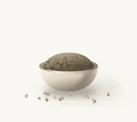
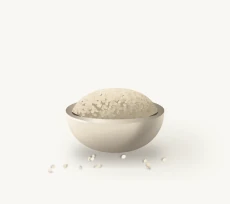
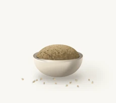
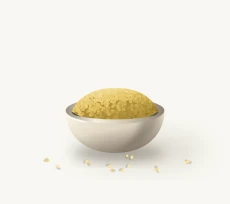
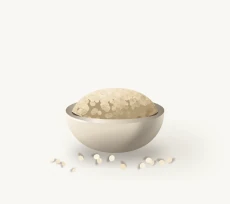
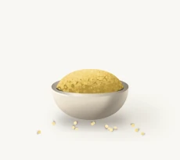
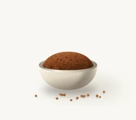
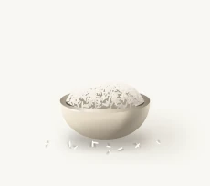
| Context | Direction | Avoid |
|---|---|---|
| Introduction | One focal illustration with open space | Competing scenes or text baked into artwork. |
| Cooking | Prioritize step, quantity, and timer | Decorative art between an instruction and its action. |
| Recovery | Small spot image beside clear guidance | Artwork that pushes the recovery action out of view. |
Name the task, explain the next step, and make recovery straightforward.
Earlier: Be Healthy
Name a practical starting point rather than a broad health promise.
Earlier: Start with this
Use a verb and object that describe the action’s result.
Earlier: Our end, not yours.
State what happened, then offer a concrete next action.
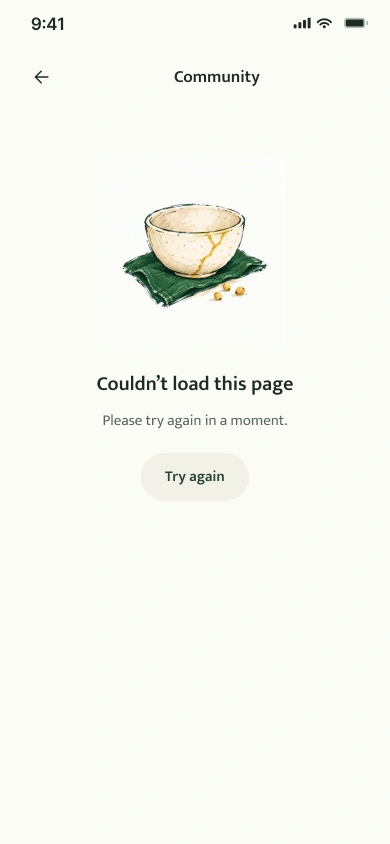
Use familiar words and short sentences. Explain grain terms in context.
Use quantities, times, and names when they support the current decision.
Avoid shame, guaranteed health outcomes, and pressure to maintain a streak.
| Pattern | Recommended example | Rule |
|---|---|---|
| Action = verb + object | Save my meal plan | Describe what the action produces. |
| Instruction = action + quantity | Add ½ cup of millet. | Put the useful detail in the same sentence. |
| Error = problem + recovery | Couldn’t load recipes. Try again. | State the problem; provide a usable next action. |
| Confirmation = result + option | Meal plan saved. · Undo | Confirm only a completed action. |
Readable content, usable targets, and states that remain clear without animation.
Minimum contrast target for normal text; 3:1 for qualifying large text. Check actual foreground/background pairs.
At least 44 × 44 pt targets on iOS and 48 × 48 dp on Android. Small icons can sit inside larger targets.
Support system font scaling. Reflow long labels and test Hindi/English specimens and longer translations.
Pair state colors with labels, borders, icons, or shape changes. Expose accessible names and selected states.
Show a pressed state immediately.
Show an in-progress state for a waiting task.
Confirm success or explain recovery.
Use brief transitions for selection and state changes. Keep timers readable and avoid decorative movement during cooking.
Offer a quiet alternative to nonessential transitions. Never rely on animation alone to communicate success.
Check text scaling, focus order, screen-reader labels, touch targets, contrast, and real-kitchen use.
| Check | Pass condition | Test context |
|---|---|---|
| Text scaling | No clipped labels or missing actions | Largest supported system text settings. |
| Nonvisual use | Names, roles, states, and order are meaningful | Screen reader and keyboard / switch navigation. |
| Motion preference | Task and feedback remain understandable | Reduced motion enabled; cooking timer running. |
Implementation requirements and test targets. Motion is documented guidance, not a claim of implemented animation.
Research identifies the problem. Standards set constraints. Design choices remain testable.
| Research signal | Visual response | Question to test |
|---|---|---|
| 23/31 rated grain knowledge 1–3/5 | Clear hierarchy, familiar names, and contextual support. | Can someone identify the grain and explain the next action? |
| 14/31 selected adaptation/ease | Recognizable meals, restrained imagery, and manageable choices. | Can someone choose a meal without outside help? |
| 13/31 selected incorporation guidance | Step-by-step cooking, visible quantities, and explicit actions. | Can someone follow the recipe in a real kitchen? |
Exploratory study: 6 interviews and 31 survey responses. Barrier answers allowed multiple selections. The palette and fonts are design choices, not participant-selected preferences or proven usability outcomes.
Semantic color roles, type hierarchy, shape, and motion.
Touch controls, spacing, proportions, and readable layouts.
48 dp targets, contrast, names, and state semantics.
How to assess minimum foreground/background contrast.
Consistency with purpose; simplify without removing clarity.
Typeface family and Latin–Devanagari support.
Display character, variable axes, and optical sizing.
Let users suppress nonessential interaction-triggered motion.
IN THE APP / CHOOSE, PREPARE, COOK
Try the full prototypeChoose, prepare, and cook: three connected steps from the app concept.
A FAMILIAR START
The swap screen connects a grain to an existing meal. Suggested recipes help translate curiosity into something the user can cook.
Design intent: reduce the effort of deciding where to begin.
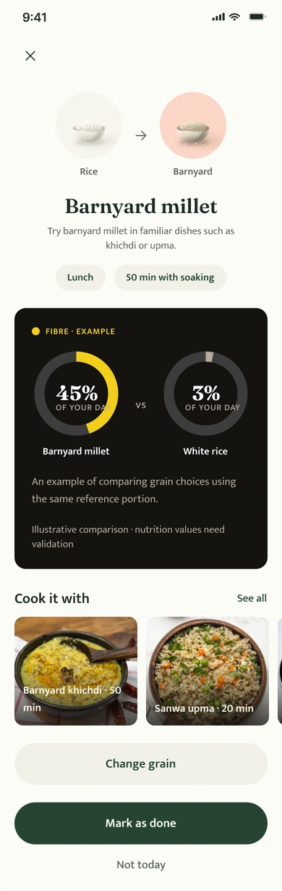
Concept screens contain illustrative nutrition, activity, and listing data. These are not measured outcomes or validated nutritional guidance.
THE SENSORY SIDE OF THE EXPERIENCE
A crisp tikki, lemon rice, a warm bowl of upma. Familiar food gives an unfamiliar grain a place to begin.
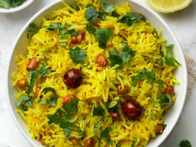
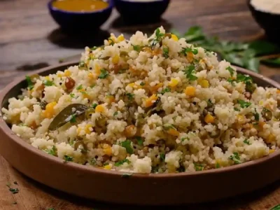
Food visuals from the existing Figma library. Sensory descriptions set the mood for the concept; they are not participant-test findings.
THE CONNECTING IDEA
“What is it?” naturally leads to “How do I use it?”
The grain page gives unfamiliar names a home, then connects information to recipes and local availability. It keeps learning close to action.
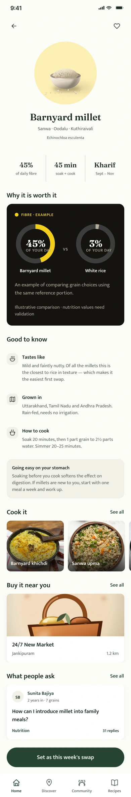
BEYOND THE APP
The wider service considers discovery in stores, cooking at home, and learning from others.
The original service proposed a label-triggered AR entry point. Its value still needs testing against a simpler mobile information page.
Discover connects the concept to shops, restaurants, and events. Live stock accuracy would require an operational model beyond the interface.
Community and recipe sharing extend preparation support. Moderation and reliable food information would be part of delivering this responsibly.
Start with grain guidance, a small set of tested recipes, and the first meal swap. Validate that people can choose and prepare a dish before adding AR, rewards, community, or live availability. This is a proposed next step, not a release that has shipped.
05 / REFLECTION & NEXT STEPS
The project taught me to follow a food decision beyond the interface.
A useful screen needs to fit what someone knows, what they can buy, and what they feel able to cook. The next round of work should test those connections.
Proposed validation plan. No usability success rates, retention figures, or business impact claims are available for this concept.
PAWAN MISHRA / PRODUCT & UX DESIGN